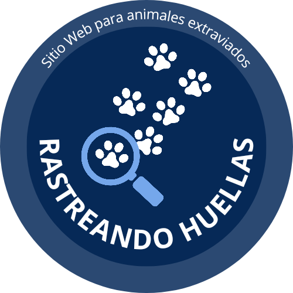

RASTREANDO HUELLAS
OBJETIVO
El proyecto beneficiará a una variedad de personas y organizaciones al proporcionar una herramienta útil para abordar esta problemática, como por ejemplo, dueños de mascotas perdidas, personas que las encuentren, organizaciones de rescate o refugios de animales, defensores de los derechos de animales y comunidades locales, ya que, esto podría ayudar a reducir la cantidad de animales abandonados en las calles y mejorar la percepción de la comunidad sobre el bienestar animal.